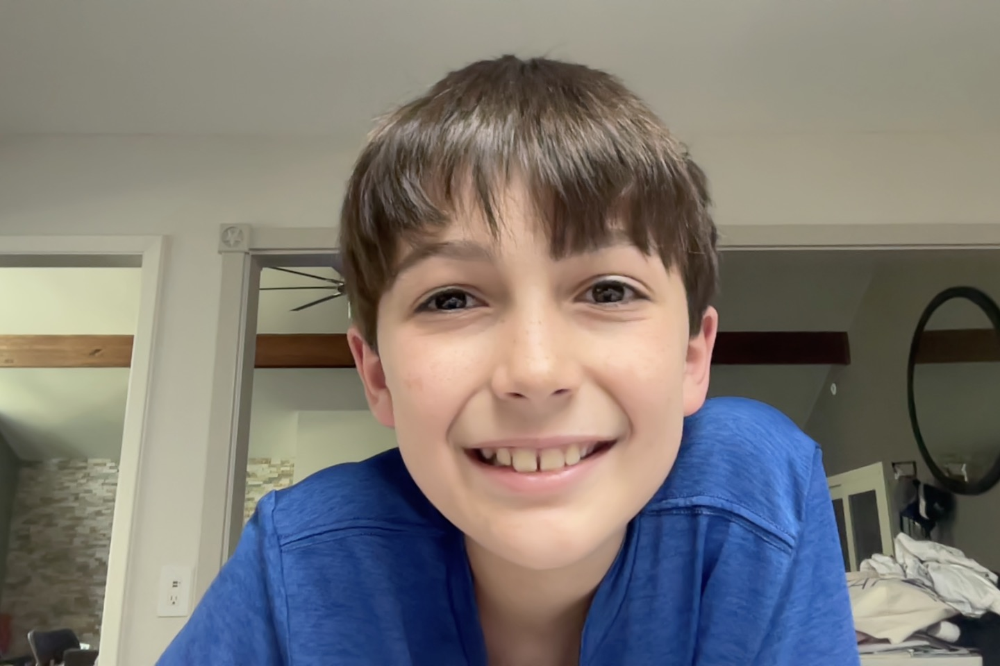

Welcome to My Website
My name is Clark. I made this website after researching the Internet as part of my Passion Project. The Internet is a massive network of computers that allows people to connect and share information.
Please browse my website to see what I've shared about my self.
This is a picture of me, and below are few of me goofing off.
Sports
I enjoy playing sports, especially baseball, basketball, and tennis.
My top favorite sports are
- Baseball
- I play at NALL
- I play on the Brewers Team
- Basketball
- Tennis
Watch me make a crazy hit! Some said it looks like a tennis backhand swing!
Family

This is my family. I am the oldest sibling. I have two younger brothers and no sisters.
School
I attend Butler Elementary School. I am in the 3rd grade. My home room teacher is Mrs. Kelly. My 1st period class is Math. My 2nd period class is Reading. Math is my favorite subject, but i really do enjoy reading books too.
Here is a link to Butler Elementary School website. Visit Butler Elementary website!
Music
I play the piano. I started playing piano over 4 years ago, and I take lessons every week. Piano is difficult, but with practice it gets easier.
Favorites
The Internet is a place to share information and ideas. In the beginning the Internet could only share information as text. Now the Internet can share information in many different ways, including videos, images, sounds, and even games. Below I've listed some of my favorite things I've found on the Internet
- Scratch
- Scratch is a website created by MIT to teach game coding
- Here is a game called Breakout I created with my Dad
- Youtube
- Describe a favorite funny video
- Discord
- Discord is a website that lets you talk with friends over the Internet with your PC
- My friends and I use it to talk when playing video games together over the Internet
- You should be safe online and only communicate with people that you know.
Here are some of my favorite things: books, video games, baseball, the color purple, and music.